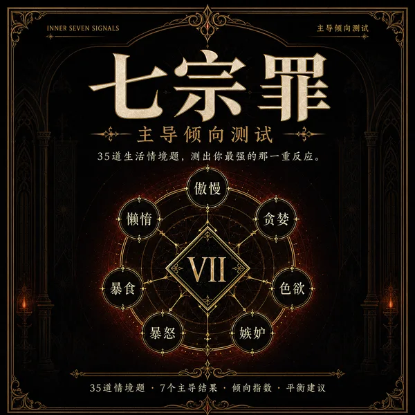
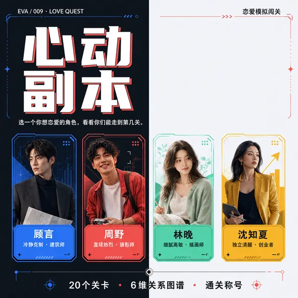
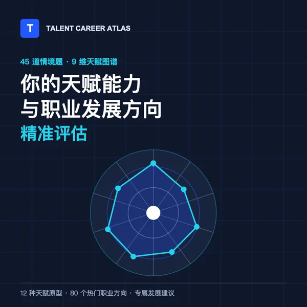
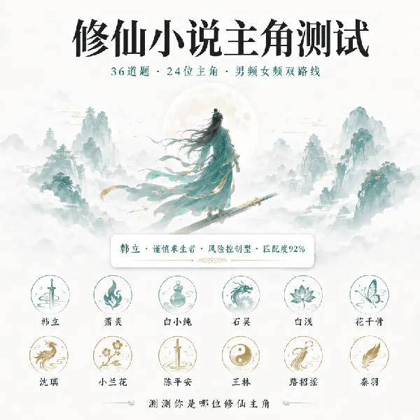
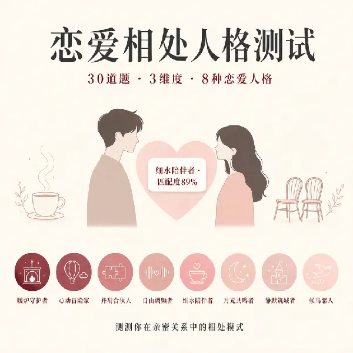
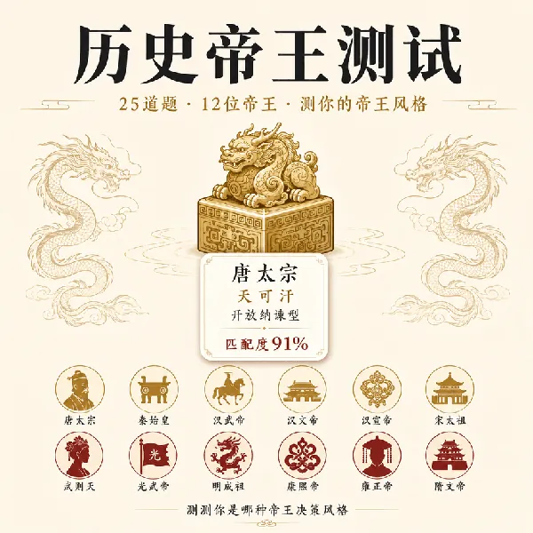
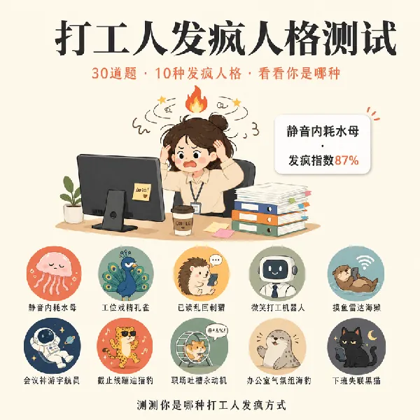
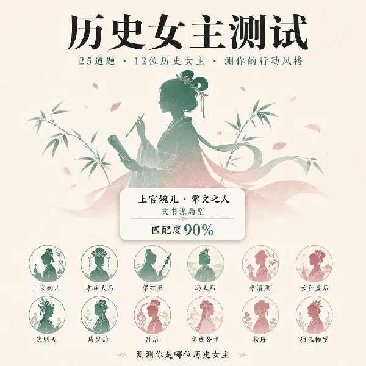
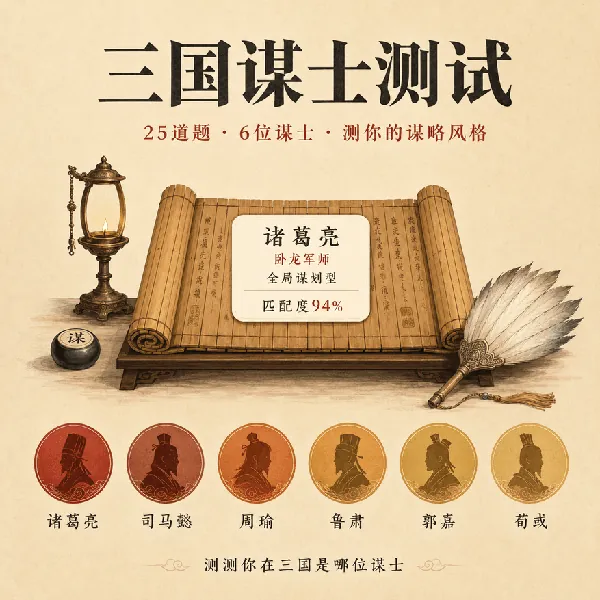

EVA/010 · 暗影倾向 · 七维雷达
PERSONAL PATTERN ANALYSIS
从你的选择里，看见真实的你。
把你放进具体情境，记录判断、取舍与行动方式。完成作答后，即时获得人格原型、倾向分析和具体建议——结果不替你下结论，只帮你多看清自己一点。
选择一个测试
按真实状态作答 · 即时出报告
10项开放测试
286道情境问题
105种人格与方向结果
NOW完成即可查看报告
01 / FEATURED
热门测评
滑动探索，找到你好奇的那个问题

暗影倾向 · 七维雷达
七宗罪主导倾向测试
35题 · 7种结果

恋爱模拟 · 剧情闯关
心动副本
20题 · 4条角色线

天赋能力 · 职业发展
你的天赋能力与职业方向评估
45题 · 12种结果 · 80个方向

修真性格 · 主角原型
测试你是哪位修仙小说主角
36题 · 24种结果
职业方向 · 副业规划
副业/一人公司赛道测试
25题 · 8种结果

亲密关系 · 相处方式
测试你是哪种恋爱相处人格
30题 · 8种结果

历史性格 · 治理偏好
测试你是哪位历史帝王
30题 · 12种结果

职场状态 · 娱乐人格
测试你是哪种打工人发疯人格
30题 · 10种结果

历史性格 · 女性力量
测试你是哪位历史女主
30题 · 12种结果

历史性格 · 谋略偏好
测试你是哪位三国谋士
25题 · 12种结果

"我王林行走于天地间，不求循规蹈矩迎天问道，但求无愧于心。"
02 / ALL EVALUATIONS
全部测评
10 项测试已开放
每项测试都从一个具体问题出发。不必揣摩标准答案，选更像你真实反应的那一个。
EVA/009 · 恋爱模拟 · 剧情闯关
心动副本｜恋爱模拟闯关测试
进入测试 →
EVA/008 · 天赋能力 · 职业发展
你的天赋能力与职业发展方向精准评估
进入测试 →
EVA/001 · 职业方向 · 副业规划
副业/一人公司赛道测试
进入测试 →
EVA/002 · 亲密关系 · 相处方式
测试你是哪种恋爱相处人格
进入测试 →
EVA/003 · 职场状态 · 娱乐人格
测试你是哪种打工人发疯人格
进入测试 →
EVA/004 · 历史性格 · 谋略偏好
测试你是哪位三国谋士
进入测试 →
EVA/005 · 历史性格 · 治理偏好
测试你是哪位历史帝王
进入测试 →
EVA/006 · 历史性格 · 女性力量
测试你是哪位历史女主
进入测试 →
EVA/007 · 修真性格 · 主角原型
测试你是哪位修仙小说主角
进入测试 →03 / HOW IT WORKS
别找标准答案，选更像你的那个反应
代入具体情境
问题来自工作、关系和生活中的真实选择，不考知识，也不要求你迎合某种正确。
累计选择倾向
系统综合整组答案识别反复出现的偏好，不用单独一道题给你贴标签。
拿到完整报告
查看人格原型、倾向画像、核心优势、风险提醒，以及下一步可以尝试的具体行动。
测评结果用于个人探索与方向参考，不构成职业、投资、医疗或心理诊断建议。